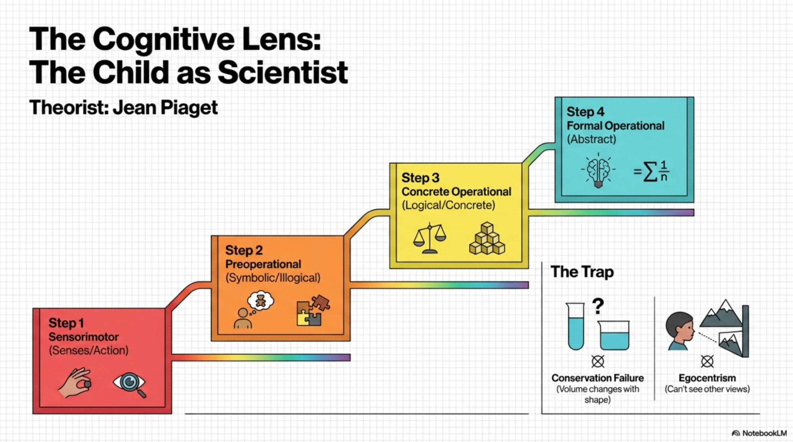
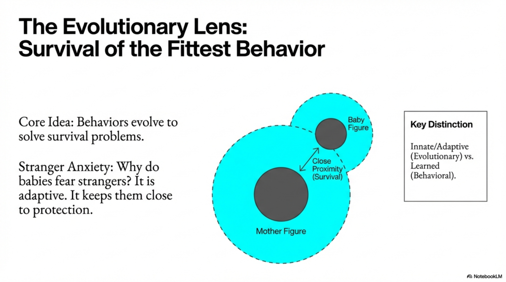
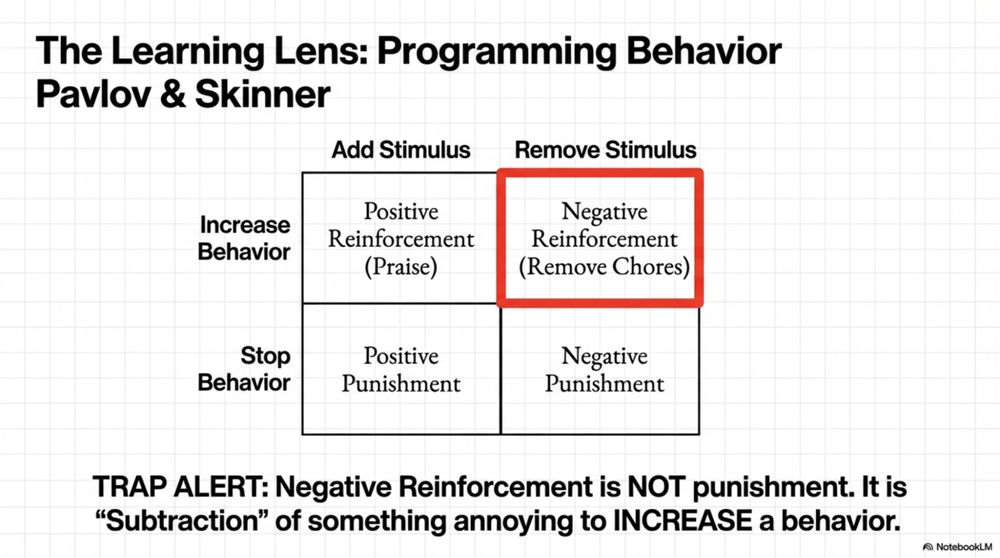
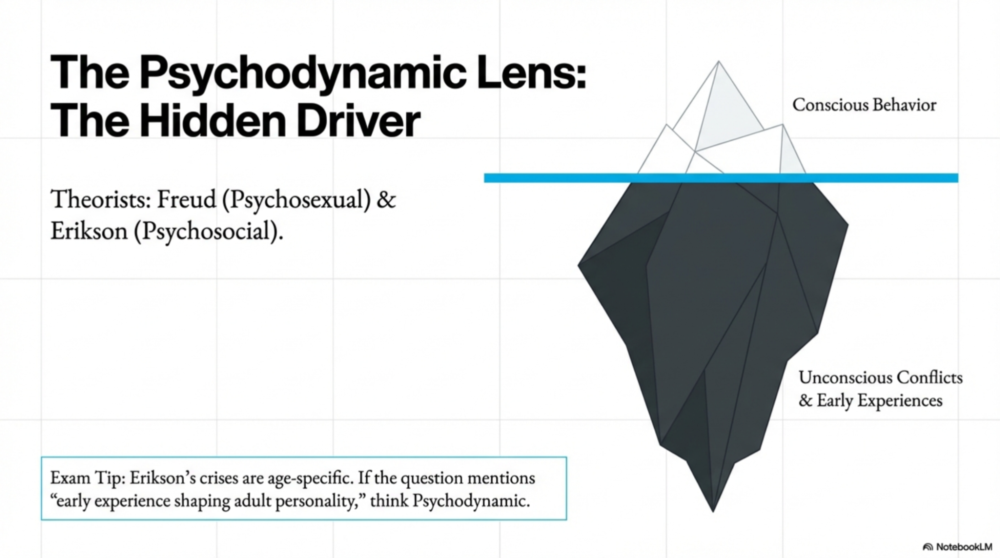
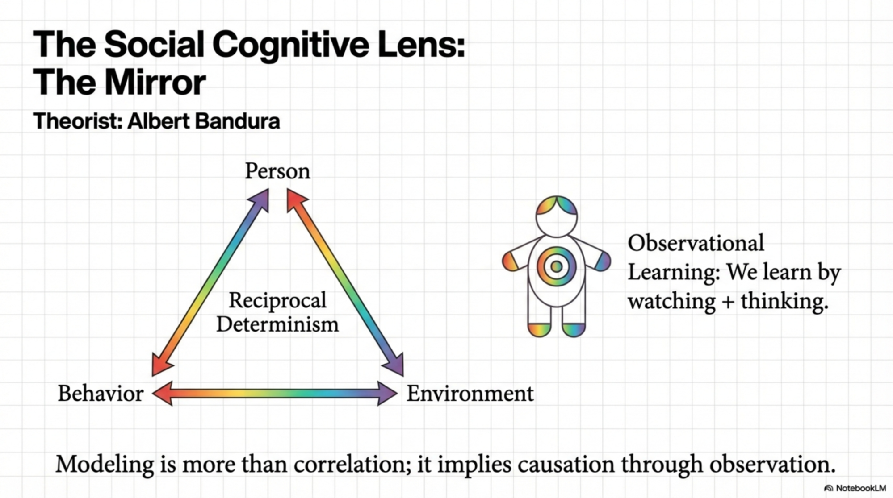
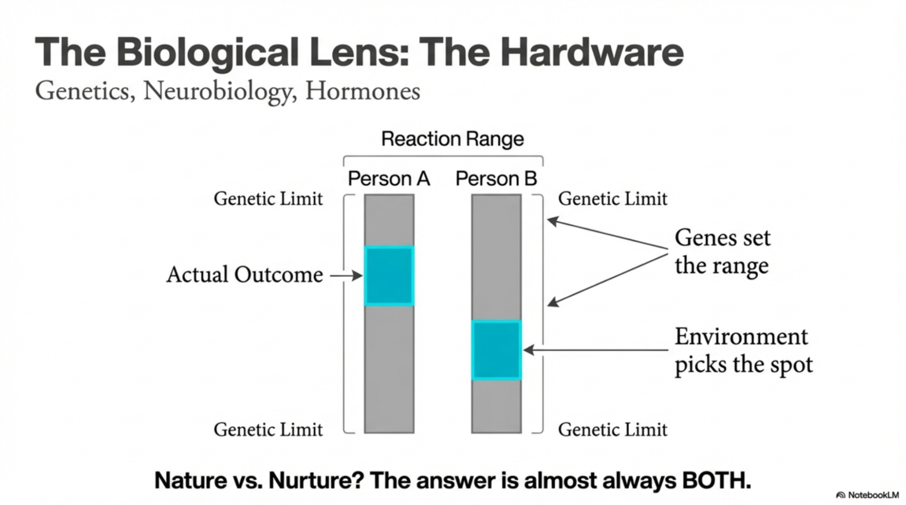
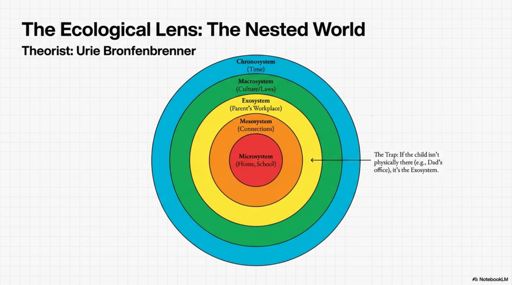

Human Growth And Development
TABLE OF CONTENTS
- Executive Summary & Study Strategy
- Part I: Theoretical Foundations
- Part II: Research Methods (The CLEP Trap Zone)
- Part III: Biological Development
- Part IV: Perceptual & Cognitive Development
- Part V: Language Development
- Part VI: Intelligence Testing
- Part VII: Social Development & Attachment
- Part VIII: Family, Society & Ecology
- Part IX: Personality & Emotion
- Part X: Schooling & Interventions
- Part XI: Developmental Psychopathology
- Master Vocabulary & Formula Sheet
- The Trap Quiz (10 Questions)
- Study Schedules
SUMMARY
The Three Critical Insights
- Piaget + Erikson + Attachment = ~30% of your score. Master these three and you've already passed.
- Research methodology questions are TRAP HEAVY. The differences between cross-sectional, longitudinal, and cross-sequential are the #1 distractor.
- The exam tests application, not memorization. You won't just see "What is Piaget's theory?"—you'll see "A researcher studies the same children every 5 years from age 5 to 25. What design is this?" (Answer: Longitudinal)
Quick Reference: Exam Breakdown
Category | % | Questions |
Theoretical Perspectives | 10% | 9 |
Research Strategies & Methodology | 6% | 5-6 |
Biological Development | 12% | 11 |
Perceptual Development | 6% | 5 |
Cognitive Development | 12% | 11 |
Language Development | 8% | 7 |
Intelligence Testing | 6% | 5 |
Social Development | 12% | 11 |
Family, Home, Society | 8% | 7 |
Personality & Emotion | 8% | 7 |
Schooling & Interventions | 6% | 5 |
Developmental Psychopathology | 6% | 5 |
TOTAL | 100% | ~90 |
Passing Score: 50 (ACE Recommendation)
Average Successful Study Time: 15-25 hours (Modern States + Quizlet + 1-2 practice tests)
Part I: Theoretical Foundations
1.1 The Seven Theoretical Perspectives (10% of Exam)
Cognitive Developmental Perspective
Core Idea: Children actively construct knowledge through stages (Piaget's framework).
- Why/How: Development isn't passive reception of information. Children have different cognitive abilities at different ages (sensorimotor child ≠ logical child).
- High-Yield: Know Piaget's 4 stages: sensorimotor → preoperational → concrete operational → formal operational
- CLEP Trap: Questions describe a scenario ("A child believes water quantity changes when poured into a different container") and ask which stage. DISTRACTOR: Confusing conservation failure with egocentrism.

Evolutionary Perspective
Core Idea: Development evolved to solve survival problems; behavioral traits have adaptive value.
- Why/How: Understanding why infants fear strangers (adaptive = stayed close to caregiver) or why adolescents seek peer approval (adaptive = eventually leave parents).
- High-Yield: Know concepts like imprinting (Konrad Lorenz), critical periods, innate behaviors
- CLEP Trap: Questions may ask "Which is an evolved behavior?" with distractors that are learned behaviors. Answer: Attachment-seeking behavior (innate, but shaped by experience).

Learning Perspective (Behaviorism)
Core Idea: All behavior is learned through conditioning and reinforcement.
- Classical Conditioning: Neutral stimulus + unconditioned stimulus → conditioned response
- Operant Conditioning: Behavior followed by consequence; consequence determines future behavior
- Why/How: Explains why children fear the dentist (paired with pain), why rewards increase study behavior
- High-Yield:
- Positive reinforcement ≠ Positive punishment (confusingly named!)
- Positive reinforcement: Add pleasant consequence → behavior increases (praise for cleaning room)
- Negative reinforcement: Remove unpleasant consequence → behavior increases (remove chore if homework done)
- Positive punishment: Add unpleasant consequence → behavior decreases (detention for lateness)
- Negative punishment: Remove pleasant consequence → behavior decreases (no phone for arguing)
- CLEP Trap: "Which scenario demonstrates positive reinforcement?" Answer is NOT "praising the student." It's "adding a pleasant consequence (praise) that increases the behavior."

Psychodynamic Perspective
Core Idea: Unconscious conflicts and early experiences shape development (Freud, Erikson).
- Freud's Psychosexual Stages: Oral → Anal → Phallic → Latency → Genital
- Erikson's Psychosocial Stages: 8 stages from infancy to old age, each with crisis/conflict
- Why/How: Early relationships with parents predict adult behavior patterns
- High-Yield:
- Freud: Fixation, defense mechanisms (projection, displacement), Id/Ego/Superego
- Erikson: Trust vs. Mistrust (infancy), Autonomy vs. Shame/Doubt (toddlerhood), Industry vs. Inferiority (school-age), Identity vs. Role Confusion (adolescence)
- CLEP Trap: Mixing up Erikson's stages with specific age ranges. Questions: "A 3-year-old is learning to use the toilet and say 'no' to parents. Which psychosocial stage?" Answer: Autonomy vs. Shame/Doubt (ages 1-3).
Social Cognitive Perspective
Core Idea: Behavior develops through interaction of person, environment, and behavior itself (Bandura's reciprocal determinism).
- Key Concept: Observational learning, self-efficacy, modeling
- Why/How: Children learn by watching others (Bobo doll experiment: children who watched adult hit doll later imitated aggression)
- High-Yield: Know the Bobo doll experiment; understand that observed behavior + reinforcement of observer = learning
- CLEP Trap: "Children who watch violent TV are more aggressive." This could be correlational (not proven cause) or demonstrating modeling. Questions test your ability to identify: Is this observation? Correlation? Modeling?

Sociocultural Perspective
Core Idea: Development is embedded in cultural context; social interaction and language shape thinking (Vygotsky).
- Zone of Proximal Development (ZPD): Gap between what a child can do alone vs. with help
- Scaffolding: Adults provide support to help child reach ZPD
- Why/How: Children develop differently in different cultures; what's valued varies (independence vs. interdependence)
- High-Yield: ZPD is HIGH-YIELD. Know that it's the gap where learning happens most efficiently. Scaffolding = adult gradually removes support as child gains competence.
- CLEP Trap: "A parent helps a child build a tower, then gradually removes help as the child succeeds independently." Which concept? Answer: Scaffolding (NOT ZPD alone—ZPD is the gap, scaffolding is the strategy).

Biological Perspective
Core Idea: Development is rooted in genetics, neurobiology, and evolutionary history.
- Why/How: Explains why puberty happens at certain ages, why some children are naturally more temperamental
- High-Yield: Understand gene-environment interaction: genes set the range, environment determines outcome
- CLEP Trap: "Nature vs. Nurture" questions. Answer is almost always: BOTH. Reaction range concept = genes set limits, environment determines where within limits.

Ecological Perspective (Bronfenbrenner)
Core Idea: Development occurs within nested environmental systems.
- Microsystem: Immediate environment (family, school, peers)
- Mesosystem: Connections between microsystems (parent-teacher communication)
- Exosystem: Indirect influences (parent's workplace, parent's social network)
- Macrosystem: Cultural values and societal norms
- Chronosystem: Historical changes over time
- Why/How: Explains why poverty affects development (exosystem: parent job loss → mesosystem: parent stress → microsystem: less supportive home)
- High-Yield: Know the five systems in order. Questions often ask: "Which level includes a child's parent's job?"
- CLEP Trap: Confusing microsystem (direct participation) with exosystem (indirect influence). Parent at school = microsystem. Parent's work affecting family = exosystem.

1.2 Comparing Theories at a Glance
Perspective | Key Figure | Main Idea | Child is... | Example |
Cognitive Dev. | Piaget | Children construct knowledge through stages | Active constructor | Child must "do" to learn |
Evolutionary | Lorenz | Behavior solves survival problems | Adaptive animal | Stranger anxiety = survival |
Learning | Pavlov, Skinner | Conditioning shapes behavior | Passive learner | Fear of dentist = conditioning |
Psychodynamic | Freud, Erikson | Early conflicts shape personality | Unconscious driver | Oral fixation → dependency |
Social Cognitive | Bandura | Observation + environment + person interact | Model observer | Watches aggression → imitates |
Sociocultural | Vygotsky | Culture & interaction shape mind | Social learner | Learns via conversation |
Biological | Genetics focus | Genes & neurobiology determine trajectory | Genetic product | Temperament is innate |
Ecological | Bronfenbrenner | Nested systems influence development | System dweller | Poverty → poor school → low achievement |
1.3 The Theorists You MUST Know
Jean Piaget (Cognitive Development) — HIGH YIELD
4 Stages of Cognitive Development:
- Sensorimotor (0-2 years): Thought through senses & movement
- Key: Object permanence develops; infant learns world exists when not visible
- TRAP: Babies DO have object permanence by 8 months (not at birth)
- Preoperational (2-7 years): Symbolic thinking but illogical
- Key concepts: Egocentrism (can't see others' perspectives), centration (focus on one attribute), irreversibility (can't reverse actions mentally)
- Conservation fails: Child thinks amount changes with shape
- TRAP: "Child thinks her sister sees what she sees" = egocentrism (NOT selfishness)
- Concrete Operational (7-11 years): Logical thinking about concrete things
- Key: Conservation succeeds, classification works, reversibility possible
- Formal Operational (12+ years): Abstract, hypothetical thinking
- Key: Can think about possibilities, test hypotheses, use logic
Key Concepts:
- Assimilation: Fitting new info into existing schemas
- Accommodation: Changing schemas to fit new info
- Equilibration: Moving from assimilation → disequilibrium → accommodation (drives learning)
CLEP High-Yield Questions:
- "A 5-year-old pours juice from a tall glass into a wide glass and says there's less juice. What concept?" → Conservation failure (preoperational)
- "An 8-year-old says if you unroll a ball of clay it becomes 'more.' What stage?" → Concrete operational, but hasn't fully mastered conservation
Erik Erikson (Psychosocial Development) — HIGH YIELD
8 Life Stages (Must memorize with ages):
- Trust vs. Mistrust (0-1 year): Does caregiver respond reliably?
- Autonomy vs. Shame/Doubt (1-3 years): Can I do things myself?
- Initiative vs. Guilt (3-6 years): Can I start my own activities?
- Industry vs. Inferiority (6-12 years): Am I competent?
- Identity vs. Role Confusion (12-18 years): Who am I?
- Intimacy vs. Isolation (18-25 years): Can I form close relationships?
- Generativity vs. Stagnation (25-65 years): Am I contributing to society?
- Ego Integrity vs. Despair (65+ years): Did I live a meaningful life?
CLEP High-Yield Questions:
- Scenario: "A 15-year-old tries different styles, interests, and friend groups." → Identity vs. Role Confusion (normal adolescence)
- Scenario: "A 70-year-old reflects on her career and feels satisfied." → Ego Integrity (successful resolution)
Lawrence Kohlberg (Moral Development) — HIGH YIELD
3 Levels, 6 Stages:
Level 1: Preconventional (Self-interest)
- Stage 1: Punishment/obedience (avoid punishment)
- Stage 2: Exchange (fairness is mutual benefit)
Level 2: Conventional (Social approval)
- Stage 3: Good interpersonal relationships (be "good" to gain approval)
- Stage 4: Social order (follow rules/laws)
Level 3: Postconventional (Universal principles)
- Stage 5: Social contract (laws are agreements; can be changed)
- Stage 6: Universal ethical principles (conscience > laws)
CLEP High-Yield:
- Scenario: "A child returns lost wallet to gain reward." → Stage 2 (exchange)
- Scenario: "A person breaks an unjust law to help someone." → Stage 5 or 6 (postconventional)
Lev Vygotsky (Sociocultural) — MEDIUM YIELD
- Zone of Proximal Development (ZPD): Gap between independent performance and performance with help
- Scaffolding: Adult support that's gradually removed
- Language as tool: Children use private speech to guide thinking
- TRAP: ZPD is NOT the child's current ability level; it's the NEXT ZONE where learning happens best
Albert Bandura (Social Learning) — MEDIUM YIELD
- Observational Learning: Learn by watching others
- Self-efficacy: Belief in ability to succeed
- Reciprocal Determinism: Person ↔ Behavior ↔ Environment all influence each other
- FAMOUS STUDY: Bobo Doll Experiment (children imitate adult hitting doll)
- TRAP: Watching TV violence doesn't PROVE causation; could be correlation (aggressive kids seek violent content)
James Marcia (Identity) — MEDIUM YIELD
4 Identity Statuses in Adolescence:
- Diffusion: No exploration, no commitment
- Foreclosure: Commitment without exploration (parents' values)
- Moratorium: Exploration without commitment (trying different things)
- Achievement: Both exploration and commitment (identity formed)
PART II: RESEARCH METHODS
2.1 The CLEP Trap Zone: Research Designs
This section accounts for ~6% of the exam, BUT the traps here appear throughout the test. Questions like "A researcher studies children at ages 5, 10, 15, and 20. What design?" test whether you truly understand methodology.
The Three Workhorse Designs
Longitudinal Design
- Definition: Same subjects studied repeatedly over TIME
- Age range at start: Any; follow for YEARS/DECADES
- Example: Study same 100 kids from age 5→25, measuring IQ each year
- Advantage: See CHANGE, development trajectories
- Disadvantage: Expensive, time-consuming, attrition (people drop out)
- CLEP Application: If question says "researcher followed same children for 20 years," = Longitudinal
Cross-Sectional Design
- Definition: Different age groups studied at ONE point in time
- Example: Study 100 five-year-olds, 100 ten-year-olds, 100 fifteen-year-olds TODAY
- Advantage: Fast, cheap, no attrition
- Disadvantage: Can't see individual CHANGE; cohort effects (kids born in 1980s differ from kids born in 2010s due to technology, culture)
- CLEP Application: If question says "researcher compared groups aged 5, 10, 15 in one year," = Cross-sectional
- TRAP: Student thinks "different ages = different people = cross-sectional" (correct!) but confuses what you learn. Cross-sectional shows DIFFERENCES, not change. The 5-year-old won't become the 10-year-old; they're different people.
Cross-Sequential (Cohort-Sequential) Design
- Definition: Multiple age groups (like cross-sectional) FOLLOWED OVER TIME (like longitudinal)
- Example: Study cohort born in 2010, cohort born 2015. Follow both from ages 5→10. Now test at ages 5, 6, 7... up to 10.
- Advantage: Separates AGE effects from COHORT effects; uses less time than full longitudinal
- Disadvantage: Still expensive, complex analysis
- CLEP Application: If question says "researcher studied two groups of children, following each for 5 years," = Cross-sequential
- TRAP: This is the "trick" answer. Most students have never heard of it. If a question mentions both age AND time passing AND multiple starting groups, it's cross-sequential.
Quick Decision Tree
Question asks about a study:
→ Does it follow SAME subjects for YEARS? = LONGITUDINAL
→ Does it compare DIFFERENT ages TODAY? = CROSS-SECTIONAL
→ Does it follow MULTIPLE cohorts over TIME? = CROSS-SEQUENTIAL
Other Designs (Lower Yield)
Experimental Design
- Random assignment to control/treatment groups
- Researcher manipulates IV, measures DV
- CAUSE-EFFECT conclusion possible
- Example: "Randomly assign children to word-teaching method A vs. B, measure reading scores"
- TRAP: Ethical issues often prevent true experiments with children (can't randomly assign to "neglect" group)
Correlational Design
- Measure two variables, see if they relate
- NO random assignment, NO manipulation
- Correlation ≠ causation
- Example: "Measure parent education and child IQ; they correlate 0.50"
- TRAP: Question asks "Does this PROVE education causes IQ?" Answer: NO, correlation only (could be reverse causation, third variable)
Case Study
- In-depth study of ONE individual or group
- Rich detail, not generalizable
- Example: Detailed study of one child's language development from age 1-5
- Used when: Rare phenomenon, need deep understanding
Observational Design
- Observe behavior in natural or lab setting WITHOUT manipulation
- Naturalistic observation: Real-world setting
- Lab observation: Controlled setting
- Example: "Observe children's play behavior at recess" = naturalistic
2.2 Variables and Research Questions
Independent Variable (IV)
- The CAUSE (what researcher manipulates/measures as predictor)
- Example: Parenting style (IV)
Dependent Variable (DV)
- The OUTCOME (what researcher measures as result)
- Example: Child behavior problems (DV)
Confounding Variable
- Third variable affecting the relationship
- Example: "Do video games cause aggression?" Confound: Age (older kids play more violent games AND are more aggressive for developmental reasons)
[VISUAL ANCHOR]
Create a 2×2 table: | Design | Time | Subjects | |--------|------|---------| | Longitudinal | Years | Same | | Cross-Sectional | Single point | Different ages | | Cross-Sequential | Years | Multiple cohorts | | Experimental | Varies | Random assignment |
PART III: BIOLOGICAL DEVELOPMENT
3.1 Prenatal Development & Teratogens (Critical for Exams!)
Prenatal Stages
- Germinal Stage (0-2 weeks): Zygote → blastocyst → implantation
- Embryonic Stage (2-8 weeks): Major organ systems forming; highly sensitive to teratogens
- Fetal Stage (8+ weeks → birth): Growth and refinement
Sensitive Periods
- Definition: Windows of heightened vulnerability/opportunity for development
- Key insight: If a teratogen hits during organ formation, that organ is damaged (e.g., alcohol in weeks 3-8 → heart, facial, CNS defects)
- Why/How: Cells are rapidly differentiating; if disrupted, can't catch up later
Teratogens (Environmental Hazards During Pregnancy)
Teratogen | Trimester | Effects | TRAP |
Alcohol (Fetal Alcohol Syndrome) | Any, esp. 1st | Facial abnormalities, low birth weight, intellectual disability | NO safe amount |
Smoking | Any | Low birth weight, premature, respiratory issues | Affects fetus via placenta |
Cocaine/Drugs | Any | Brain damage, tremors, low birth weight | Crosses placenta easily |
Rubella (German Measles) | 1st | Cataracts, deafness, heart defects | Before pregnancy = protected; after = too late |
Thalidomide | 1st | Limb malformations (phocomelia) | Famous historical case |
Zika Virus | Any, esp. 1st | Microcephaly (small brain) | Recent concern |
CLEP High-Yield: Know fetal alcohol syndrome (most common preventable cause of intellectual disability in US) and that Zika → microcephaly.
3.2 Brain Development
Critical Brain Structures & Their Roles
Structure | Function | Development |
Prefrontal Cortex | Executive function, impulse control, planning | Develops into early 20s (IMPORTANT for explaining adolescent behavior) |
Hippocampus | Memory formation | Begins developing in utero; continues through childhood |
Hypothalamus | Hormonal regulation | Activates in puberty |
Cerebellum | Motor coordination | Develops early; critical for movement |
Limbic System | Emotion | Develops earlier than prefrontal cortex (why teens feel intensely but can't regulate) |
CLEP Insight: Questions often ask "Why do adolescents take risks?" Answer involves prefrontal cortex not being fully developed → limbic system (emotion) outweighs executive control.
Brain Development Patterns
- Myelination: Axon coating speeds up neural transmission. Develops in waves: first motor areas (infancy), then sensory, last prefrontal cortex (adolescence)
- Synaptic pruning: Unused neural connections are eliminated (use it or lose it)
- Critical/Sensitive periods: Windows when brain is primed for specific learning
TRAP: "Do children learn language faster than adults?" → YES (sensitive period, but also learning more broadly). "Is the brain done developing at 18?" → NO (prefrontal cortex until ~25).
3.3 Motor Development
Cephalocaudal (Head-to-Toe) Principle
- Definition: Development proceeds from head down to feet
- Examples:
- Control head before controlling arms
- Control upper body before lower body
- Sit before stand before walk
- Why/How: Brain controls upper body earlier (motor cortex homunculus has larger representation for head/arms)
Proximodistal (Center-to-Periphery) Principle
- Definition: Development proceeds from core toward limbs
- Examples:
- Control trunk before fingers
- Gross motor (large movement) before fine motor (precise)
- Whole-arm reaching before finger pointing
CLEP Application: If question describes a baby's motor milestones in wrong order, you'll recognize it's wrong.
Gross Motor Milestones (Approximate Ages)
- 2 months: Lift head
- 4-6 months: Roll over
- 6-8 months: Sit with support
- 8-10 months: Stand with support
- 12 months: First steps
- 18 months: Walk independently
- 2 years: Run
Fine Motor Milestones
- 3 months: Swipe at objects
- 4-5 months: Grasp rattle
- 6 months: Transfer object hand to hand
- 9-12 months: Pincer grasp (thumb + finger)
- 18 months: Stack 2-3 blocks
- 2 years: Scribble
TRAP: Questions give wrong ages. "A 3-month-old walked independently" = impossible. But some variation is normal (within 1-2 months).
3.4 Physical Growth & Puberty
Growth Patterns
- Infancy: Rapid growth (~1 inch/month)
- Childhood: Steady growth (~2-3 inches/year)
- Adolescence: Growth spurt (5-8 inches/year), peaks earlier in girls
Puberty (Adolescence onset: 8-14 years, depending on sex)
Primary Sex Characteristics
- Development of reproductive organs
- TRAP: "A child develops pubic hair" = secondary (not primary)
Secondary Sex Characteristics (Testable!)
- Pubic/body hair
- Voice changes
- Breast development
- Muscle development
- Skin changes (acne)
- Growth of genitalia (external)
CLEP Application: Question: "Which is a secondary sex characteristic?" Answer: Pubic hair (NOT development of ovaries).
Factors Affecting Puberty Timing
- Nutrition: Poor nutrition delays puberty
- Body weight: Critical weight threshold (girls ~100 lbs triggers menarche)
- Stress: Chronic stress may delay puberty
- Light/Photoperiod: Some evidence light exposure affects timing
- Genetics: Family timing patterns; 60-70% heritable
3.5 Genetic Influence & Genetic Testing
Heredity & Environment Interaction
- Reaction Range: Genes set upper/lower limits; environment determines where in range
- Example: Genetic potential for height = 5'6"-5'10"; nutrition determines final height
- Gene-Environment Correlation:
- Passive: Parents provide genes AND environment (tall parents → tall genes + sports opportunities)
- Evocative: Child's genes evoke environmental response (athletic child → gets athletic opportunities)
- Active: Child seeks matching environment (intellectual child → seeks books/education)
CLEP Application: "Can a child overcome genetic limitations?" → YES, through environment. "Are genes the only factor?" → NO. "Does environment override genes?" → NO (limits exist).
Genetic Testing/Disorders (Brief Overview)
- Amniocentesis: Needle into amniotic fluid; tests for Down syndrome, neural tube defects
- Chorionic Villus Sampling (CVS): Tissue sample; earlier than amniocentesis
- Ultrasound: Imaging; can detect some structural anomalies
- Common Genetic Disorders:
- Down syndrome (Trisomy 21): Extra chromosome 21
- Cystic fibrosis: CFTR gene mutation → mucus buildup
- Sickle cell anemia: Hemoglobin mutation → misshapen RBCs
- Phenylketonuria (PKU): Can't metabolize phenylalanine; treated with diet → no intellectual disability
- Hemophilia: Blood clotting factor deficiency
TRAP: "Is PKU treatable?" → YES (diet low in phenylalanine). "Can genetic disorders be prevented?" → Some can be managed/treated, not "prevented" in most cases.
[VISUAL ANCHOR]
Create developmental timeline chart:
- Prenatal: Weeks 0-40 (germinal, embryonic, fetal stages; teratogen sensitivity)
- Infancy: 0-12 months (rapid growth, motor milestones, brain development)
- Toddlerhood: 1-3 years (continued motor, language explosion)
- Preschool: 3-6 years (refinement, school prep)
- School Age: 6-12 years (growth steady, academic demands)
- Adolescence: 12-18 years (growth spurt, puberty, brain maturation)
PART IV: PERCEPTUAL & COGNITIVE DEVELOPMENT
4.1 Perceptual Development (6% of Exam)
Sensory Acuity (Newborn vs. Adult)
Sense | Newborn Ability |
Vision | 20/400 (blurry); improves rapidly to 20/20 by ~6 months |
Hearing | Functional; responds to sound at birth |
Smell | Functional; prefers mother's scent |
Taste | Can taste; prefer sweet |
Touch | Responsive; grasp reflex present |
Habituation
- Definition: Decreased response to repeated stimulus
- Example: Baby hears parent's voice repeatedly → stops orienting to it
- Why/How: Nervous system adapts; allows attention to novel stimuli
- Research application: Habituation paradigm used to test infant memory (if baby re-orients to different stimulus, shows they remembered the first one)
TRAP: "The baby stops reacting to the rattle" = habituation (NOT fatigue or boredom technically, though similar effect).
Sensitive Periods
- Definition: Windows when organism is especially responsive to environmental input
- Example: Language: infants best learn phonemes native to their language during first 6-12 months
- Why/How: Brain regions are primed; miss the window and later learning is harder
- Visual development: Must have clear vision in first months; congenital cataracts must be corrected early or blindness persists (even after cataract removal if delay)
Sensory Deprivation
- Definition: Lack of sensory input during critical period
- Effects: Vision: Irreversible blindness (even if cause removed later). Hearing: Language deficits if cochlear implant delayed past 3-5 years.
- Why/How: Neural circuits need stimulation to develop; without it, they're repurposed elsewhere
- TRAP: "Can a child recover from early blindness?" → Depends on age. If deprivation was brief (weeks), yes. If years, likely permanent vision impairment.
4.2 Cognitive Development Throughout Life Span
Piaget Revisited (Detailed)
Sensorimotor Stage (0-2 years)
Key Development: Object Permanence
- Definition: Understanding that objects continue to exist when hidden
- Timeline:
- 0-4 months: No object permanence (out of sight = out of mind)
- 4-8 months: Partial; looks for partially hidden object
- 8-12 months: Full object permanence; searches for completely hidden object
- Why/How: Requires memory and mental representation
Other Sensorimotor Achievements:
- Reflexes → coordinated actions (e.g., random grasping → intentional reaching)
- Circular reactions (repeating actions that produce interesting effects)
- A-not-B error: Baby looks in first hiding spot (A) even after seeing object hidden at B (perseveration, ~8-12 months)
Preoperational Stage (2-7 years)
Key Limitation: Centration
- Definition: Focusing on one attribute while ignoring others
- Example: Conservation failure (judging amount by height of liquid, ignoring width of container)
- Why/How: Child can't yet mentally reverse or consider multiple dimensions
Key Limitation: Egocentrism
- Definition: Inability to see another's perspective
- NOT: Selfishness (common misconception!)
- Example: 3-year-old covers eyes and says "You can't see me" (believes if I can't see you, you can't see me)
- Classic Test: Piaget's three-mountain task (child can't identify what other person sees from different angle)
Key Limitation: Irreversibility
- Definition: Can't mentally undo an action
- Example: If you flatten a ball of clay, child thinks there's "more" because they can't mentally reform it
Other Achievements:
- Symbolic thought (words, drawings represent objects)
- Fast mapping (learning new word in one exposure)
- Magical thinking (belief in magic, fantasies seem real)
TRAP: "A 4-year-old thinks her doll has feelings." → Animism (magical thinking); normal for preoperational stage.
Concrete Operational Stage (7-11 years)
Key Achievement: Conservation
- Definition: Understanding that quantity doesn't change when appearance does
- Timeline: Conserves number first (~6-7 years), then liquid/mass (~7-8 years), then volume (~11-12 years)
- Example: Same amount of juice in tall glass vs. wide glass = same amount (child now understands)
Other Achievements:
- Reversibility: Can mentally undo operations
- Classification: Can organize objects by multiple attributes
- Seriation: Can arrange objects in logical order (tallest to shortest)
- Decentration: Can consider multiple attributes
- Decline of egocentrism: Can take others' perspectives
- Limitation: Still concrete; can't yet think about abstract concepts
TRAP: "An 8-year-old passes conservation tasks." → Concrete operational (normal). "An 8-year-old fails conservation." → Possible concern (should have acquired by this age).
Formal Operational Stage (12+ years)
Key Achievement: Abstract Thinking
- Can think about hypotheticals ("What if...?")
- Can solve abstract logic problems
- Can think about their own thinking (metacognition)
Hypothetico-Deductive Reasoning:
- Form hypothesis, test systematically, draw conclusions
- Example: "Pendulum swing speed depends on?" Adolescent tests weight, string length, release height systematically
Other Achievements:
- Idealism (imagining perfect worlds, frustrated when reality doesn't match)
- Imaginary audience (believing others are as focused on them as they are)
- Personal fable (belief that their experiences are unique, special, rules don't apply to them)
TRAP: "Adolescent takes a risk because they think bad things won't happen to them" = personal fable. This is NORMAL for stage, not pathology.
Note: Not all adults reach formal operations fully; varies by education, domain.
Memory & Information Processing
Working Memory (Short-term)
- Capacity: ~7 ± 2 items for adults; ~3-4 items for young children
- Duration: ~20-30 seconds without rehearsal
- Development: Increases with age; improves with practice/strategies
Long-term Memory
- Episodic: Events ("I went to the park")
- Semantic: Facts ("Paris is the capital of France")
- Procedural: Skills ("How to ride a bike")
- Development: Improves with age; young children have less episodic memory (infantile amnesia = can't remember events before ~3-4 years)
Encoding Strategies (Children Learn These)
- Rehearsal: Repeat information
- Organization: Group by category
- Elaboration: Relate to existing knowledge
- Metacognition: Think about thinking
TRAP: "A 5-year-old can't remember what happened last week." → Not necessarily concerning; memory span short, rehearsal strategies not yet developed.
Attention & Executive Function
Attention:
- Selective attention: Focus on one stimulus, ignore others (improves with age)
- Sustained attention: Maintain focus (improves into school age)
- Divided attention: Multitask (improves significantly in adolescence)
Executive Function (Prefrontal Cortex):
- Inhibition: Resist impulses (poor in toddlers; improves into adolescence)
- Flexibility: Switch mental set (improves with age)
- Working memory: Hold/manipulate information (improves into adolescence/early adulthood)
CLEP Application: Explains why young children can't follow complex instructions and why adolescents can finally plan multi-step projects.
Play & Its Role in Development
Types of Play (Piaget/Smilansky)
- Functional Play (0-2 years): Repetitive actions (banging, shaking)
- Constructive Play (2-4 years): Building, creating (blocks, drawing)
- Symbolic/Pretend Play (2-7 years): Role-play, imaginative ("Let's play house")
- Games with Rules (6+ years): Following rules, turn-taking, competition
Why/How: Play develops creativity, problem-solving, social skills, emotional regulation.
TRAP: "A 3-year-old engages in parallel play (playing near, not with, peers)." → Normal for this age; still developing social skills.
[VISUAL ANCHOR]
Create Piaget Stages chart with columns:
- Stage | Age | Key Limitation | Key Achievement | Example
- Sensorimotor | 0-2 | No mental representation | Object permanence | Baby searches for hidden toy
- Preoperational | 2-7 | Centration, egocentrism | Symbolic thought | "Can't see me" (cover eyes)
- Concrete Operational | 7-11 | No abstract thought | Conservation | Same juice in different glasses
- Formal Operational | 12+ | (None major) | Abstract thinking | Can solve algebra problems
PART V: LANGUAGE DEVELOPMENT
5.1 From Sounds to Sentences
Prelinguistic Development (Before Words)
0-6 Months: Cooing & Babbling Begins
- Cooing (2-3 months): Vowel-like sounds ("oooo," "ahhh")
- Babbling (4-6 months): Consonant-vowel combinations ("ba-ba-ba," "da-da")
- Why/How: Practice motor control; brain developing language areas
- TRAP: "Is babbling language?" → NO; just sound play. But critical precursor.
6-12 Months: Babbling Advances
- Babbling becomes more language-specific (English babies' babble sounds different from Japanese babies' by 10 months)
- Infants understand some words ("no," own name) before producing them
- First word typically: 10-15 months
First Words & Early Vocabulary
Vocabulary Explosion (16-18 months)
- Sudden jump from ~50 words to several hundred
- Why: Fast mapping (learning new word in one exposure with minimum context)
- TRAP: Not all 18-month-olds have vocabulary explosion; range is wide (normal 50-500 words)
Semantic Development (Meaning)
- Underextension: Using word too narrowly ("dog" only for family dog, not other dogs)
- Overextension: Using word too broadly ("dog" for all animals with four legs)
- CLEP Application: Question: "A child calls all round fruits 'apples.'" → Overextension
Grammar Development (Syntax)
Stages of Sentence Development
- Holophrastic Stage (12-18 months): One word = whole sentence ("milk" = "I want milk")
- Two-word Stage (18-24 months): "Mommy up," "more juice"
- Telegraphic speech: Only essential words, omit function words ("go store" not "I go to store")
- Three-word Stage (2-3 years): More grammar, but still omissions
- Sentences with Clauses (3-5 years): Complex sentences emerging
- Adult-like Grammar (5+ years): Mostly correct, but refinement continues
TRAP: "A 2-year-old says 'I goed.'" → This is NORMAL (overgeneralization of -ed rule). Disappears by age 5.
Pragmatics (Social Use of Language)
- Definition: Using language appropriately for social context
- Examples:
- Knowing when to listen vs. talk
- Using polite forms with adults
- Understanding jokes/sarcasm
- Taking conversational turns
- Development: Starts ~2 years, continues through adolescence
- TRAP: "A 4-year-old doesn't understand sarcasm." → Normal; not fully developing until 8-10 years
Bilingualism
- Benefits: Cognitive advantages (metalinguistic awareness, flexibility)
- Timeline: Sequential bilingual (exposed to second language after age 3) develops slower initially but catches up; simultaneous bilingual (two languages from birth) reaches native-like fluency in both
- TRAP: "Bilingual children are delayed in language." → Mixing two languages initially (code-switching) but develop both; not "delayed," just distributed across languages
- Age: Exposure before age 10 optimal for accent-free second language learning
5.2 Theoretical Perspectives on Language
Nativism (Chomsky)
- Core Idea: Universal grammar (innate language structures)
- Evidence: All languages share universal features; children learn too fast for environment alone
- CLEP: Question: "Which theorist emphasizes innate language ability?" → Chomsky (nativist)
Empiricism/Behaviorism (Skinner)
- Core Idea: Language is learned through imitation, reinforcement, repetition
- Problem: Doesn't explain why children produce sentences they've never heard ("I goed")
Social Interactionist (Vygotsky, Tomasello)
- Core Idea: Language develops through social interaction; children learn words for socially salient things
- Why/How: Parents scaffold language; child learns through joint attention, shared reference
- CLEP: "Why does a child learn 'dog' quickly?" → Because socially relevant; caregiver points and names
- Supports: Combination of all factors (nature + nurture + interaction)
TRAP: Questions try to make you choose one perspective. Answer: ALL contribute.
[VISUAL ANCHOR]
Create vocabulary development chart:
- Age 12 months: ~50 words (mostly nouns)
- Age 18 months: ~50-500 words (vocabulary explosion range)
- Age 24 months: ~300-500 words (start combining)
- Age 3 years: ~1000 words
- Age 4 years: ~1500-2000 words
- Age 5 years: ~2500+ words
PART VI: INTELLIGENCE TESTING
6.1 The Nature of Intelligence
Definitions & Concepts
Intelligence: Ability to learn, reason, solve problems, adapt to environment
- Crystallized Intelligence: Accumulated knowledge (improves or maintains with age)
- Fluid Intelligence: Ability to reason abstractly (peaks in early adulthood, declines with age)
Multiple Intelligences (Gardner):
- Linguistic, Logical-mathematical, Spatial, Bodily-kinesthetic, Musical, Interpersonal, Intrapersonal, Naturalistic
- Note: Not equally tested on CLEP; mostly vocabulary
Intelligence Testing History & Controversy
Origins (Binet & Simon, 1905)
- Created test to identify students needing extra help
- Concept of Mental Age: The age level at which a child performs
- Concept of IQ = (Mental Age / Chronological Age) × 100
- Example: 8-year-old with mental age 10 = IQ 125
Modern IQ Tests
- IQ Score Distribution: Mean = 100, SD = 15
- Average: 85-115
- Gifted: 130+
- Severe Intellectual Disability: <20-25
- Subtests: Measure different cognitive abilities (verbal, perceptual, processing speed, working memory)
CLEP Application: Question: "An 8-year-old scores 120 on IQ test. What's their mental age?" → MA = 9.6 years (120 = MA/8 × 100; solve for MA)
Heredity vs. Environment (Nature-Nurture Again!)
Twin Studies Show:
- Identical twins' IQ correlation: ~0.86 (very high)
- Fraternal twins' IQ correlation: ~0.60 (moderate)
- Conclusion: ~50-70% of IQ variation is heritable
Environmental Factors Affecting IQ:
- Socioeconomic status (SES): Large gap (20-30 points) between high and low SES
- Nutrition: Iodine deficiency can lower IQ by 10-15 points
- Parental education & involvement: Predicts child IQ
- Classroom quality: Affects achievement, somewhat affects IQ
- Stereotype threat: Negative stereotypes reduce performance
TRAP: "Are genes destiny?" → NO. Reaction range means environment matters; SES explains some gap, not genes.
6.2 Giftedness & Intellectual Disability
Giftedness
Definitions:
- IQ ≥ 130 (top 2%)
- OR high performance in specific domain (art, music, athletics)
- OR high creativity, leadership, motivation
Characteristics:
- Advanced vocabulary, reasoning, learning speed
- High curiosity, perfectionism
- May have asynchronous development (gifted in one area, age-appropriate in another)
Identification Issues:
- Underidentification of minorities (cultural bias in tests)
- Gender bias (girls underidentified in math/science)
Educational Needs:
- Acceleration (skip grades, advanced courses)
- Enrichment (deeper learning in interests)
- Social-emotional support (perfectionism, anxiety)
Intellectual Disability
Definition: Significantly below-average general intelligence (IQ <70) + deficits in adaptive functioning, onset before age 18
Levels (DSM-5):
- Mild: IQ 55-69 (can live independently with support)
- Moderate: IQ 40-54 (need structured environment, can do some self-care)
- Severe: IQ 25-39 (require significant supervision, minimal self-care)
- Profound: IQ <25 (require total supervision)
Causes:
- Genetic (Down syndrome, fragile X syndrome, PKU)
- Environmental (prenatal infections, toxins; postnatal brain injury, malnutrition)
- Mixed/unknown
CLEP Application: Question: "A child has IQ 48, needs structured environment, some self-care. What level?" → Moderate
[VISUAL ANCHOR]
Create IQ distribution bell curve:
- 70: 2.3% (starts intellectual disability)
- 85-115: ~68% (average range)
- 130+: ~2% (gifted)
PART VII: SOCIAL DEVELOPMENT & ATTACHMENT
7.1 Attachment Theory (HIGH YIELD — ~5-7 Questions)
Foundations (Bowlby & Ainsworth)
John Bowlby's Attachment Theory
- Core Idea: Infants are biologically programmed to seek proximity to caregiver; attachment is adaptive (survival)
- Phases of Attachment:
- 0-3 months: Indiscriminate responsiveness (accepts comfort from anyone)
- 3-7 months: Discriminate sociability (recognizes caregiver but still comfortable with others)
- 7-24 months: Focused attachment (prefers caregiver, protests separation = separation anxiety)
- 24+ months: Goal-corrected partnership (understands caregiver may have own goals; begins perspective-taking)
Mary Ainsworth's Attachment Styles (The Strange Situation)
Procedure: Infant + caregiver in lab. Caregiver leaves; stranger enters; caregiver returns. Observe reunion behavior.
Attachment Styles:
- Secure Attachment: Seeks caregiver when distressed; comforted by reunion; uses caregiver as base to explore
- Caregiver: Sensitive, responsive
- Outcome: Better social skills, less anxiety
- Insecure-Avoidant: Ignores caregiver when returning; shows little distress; doesn't use caregiver as base
- Caregiver: Dismissive, emotionally unavailable
- Outcome: Difficulty with intimacy, independent but aloof
- Insecure-Resistant: Highly distressed when caregiver leaves; seeks comfort but doesn't accept it (pushes away); angry, clingy
- Caregiver: Inconsistent, sometimes responsive, sometimes rejecting
- Outcome: Anxiety, clingy, difficulty regulating emotions
- Disorganized (Insecure-Disorganized): No consistent pattern; may approach caregiver with fearful expression, freeze, or show contradictory behaviors
- Caregiver: Abusive, frightening, or severely disrupted (loss, substance abuse)
- Outcome: Highest risk for behavioral/emotional problems
CLEP High-Yield:
- Question: "An infant seeks comfort from caregiver and is soothed." → Secure attachment
- Question: "Infant ignores caregiver upon reunion." → Insecure-avoidant
- Question: "Infant wants comfort but resists caregiver's attempts to soothe." → Insecure-resistant
- Question: "Infant shows contradictory behaviors (approach with fear)." → Disorganized
Attachment Outcomes
- Continuity: Infant attachment predicts (but doesn't determine) later relationships
- Plasticity: New relationships can change trajectory (especially if intervention provided early)
7.2 Moral Development (Revisited with Application)
Kohlberg's Stages (Quick Recap)
Preconventional: Punishment/reward driven Conventional: Following social rules/laws Postconventional: Universal principles
CLEP Application:
- Scenario: "A parent tells child 'Don't steal or you'll go to jail'" → Teaching stage 1 (punishment/obedience)
- Scenario: "A person gives homeless person food because it's kind" → Stage 3 or 4 (conventional helping)
- Scenario: "A person breaks an unjust law to save a life" → Stage 5 or 6 (postconventional conscience)
Prosocial Behavior (Helping, Sharing, Comforting)
Development:
- 12-18 months: Egocentric; can't help others (lack understanding)
- 18-36 months: Beginning empathy; can comfort with hug
- 3-5 years: Can understand others' needs; may help/share
- 5+ years: More consistent prosocial behavior; understands fairness
Influences:
- Modeling: Children imitate prosocial behavior they see
- Reinforcement: Praised helping → more helping
- Empathy development: Understanding others' feelings enables prosocial action
- Culture: Varies in emphasis on independence vs. interdependence/helping
7.3 Gender Development (Moderate Yield)
Gender Concepts (Distinct, Sequential Stages)
- Gender Identity (2-3 years): Child knows own gender ("I'm a girl"; "I'm a boy")
- Doesn't yet understand it's permanent
- Gender Stability (3-4 years): Child understands gender is stable over time
- "I'm a girl now and will be a girl when I grow up"
- Doesn't yet understand it's stable across contexts
- Gender Constancy (4-5 years): Child understands gender is invariant
- Girl is still girl even if she has short hair, wears boy clothes
- Full understanding of gender consistency
TRAP: Question: "A 4-year-old says 'If I wear a dress, I'll be a girl.'" → Gender constancy not yet fully developed. Likely stage 2 (stability) or early stage 3.
Gender Stereotypes & Schemas
- Gender Schema: Mental category organizing gender-related info
- Stereotype: Beliefs about how genders differ (girls = nurturing, boys = aggressive)
- Gender Roles: Behaviors society expects by gender
- Development: By age 2, children notice gender; by 3-5, hold rigid stereotypes; adolescence: stereotypes loosen somewhat
Biological vs. Environmental Influences on Gender
- Hormonal: Testosterone exposure prenatally affects toy preference, activity level (some evidence, but controversial)
- Social: Parental encouragement, peer modeling, media all shape gender behavior
- Most evidence: Complex interaction; both biology and environment
7.4 Peer Relationships & Friendship
Peer Play Stages (Parten, 1932)
- Solitary Play (0-2 years): Plays alone
- Onlooker Play (2 years): Watches others play
- Parallel Play (2-3 years): Plays near peers but not with them
- TRAP: "3-year-old plays near other children" = Normal, not antisocial
- Associative Play (3-4 years): Plays with others but shared goal not yet consistent
- Cooperative Play (4+ years): Plays with organized, shared goals
Friendship Development
- Early childhood (3-5): Based on proximity, activity (play partner)
- Middle childhood (6-12): Based on shared interests, activity ("We both like soccer")
- Adolescence: Based on loyalty, intimacy, shared values ("I can trust her with my feelings")
Peer Acceptance & Popularity
Types of Peer Status:
- Popular: Well-liked, positive social skills
- Neglected: Not disliked, just overlooked
- Rejected: Actively disliked; aggressive or withdrawn
- Controversial: Both liked and disliked
Predictors: Social skills, emotional regulation, prosocial behavior predict popularity; aggression predicts rejection.
7.5 Aggression (Moderate Yield)
Types of Aggression
- Physical: Hitting, pushing, grabbing
- Peak: 2-4 years (then decreases as language improves)
- More common in boys
- Verbal: Name-calling, teasing, threatening
- Increases with age; can replace physical
- Relational/Social: Exclusion, spreading rumors, manipulation
- Increases in middle childhood and adolescence
- More common in girls than boys
- Instrumental: Aggression to get something (toy, attention)
- Hostile: Aggression to hurt someone
- Hostile aggression increases with age (more intentional)
Causes of Aggression
- Genetic: Temperament predisposes some children
- Neurobiological: Low serotonin, high testosterone associated with aggression
- Social Learning: Imitation, reinforcement (Bandura's Bobo doll experiment)
- Family: Harsh parenting, exposure to domestic violence predicts childhood aggression
- Media: Violent media exposure shows weak to moderate correlation with aggression (NOT proven causation)
- Frustration: Blocked goals can trigger aggression
- Provocation: Social rejection, bullying can trigger aggression
TRAP: "Does violent media cause aggression?" → Correlation exists, causation not proven. Could be: aggressive kids seek violent content, personality predisposes to both, or media does influence. Most evidence suggests small effect at most.
[VISUAL ANCHOR]
Create attachment styles comparison table: | Style | Behavior at Reunion | Caregiver Quality | Outcome | |-------|-------------------|------------------|---------| | Secure | Seeks comfort, easily soothed | Sensitive, responsive | Confident, good relationships | | Insecure-Avoidant | Ignores caregiver | Dismissive | Aloof, difficulty with intimacy | | Insecure-Resistant | Seeks but resists comfort, angry | Inconsistent | Anxious, clingy, emotion dysregulation | | Disorganized | Contradictory (approach + fear) | Frightening/abusive | Highest risk for problems |
PART VIII: FAMILY, SOCIETY & ECOLOGY
8.1 Parenting Styles (HIGH YIELD)
Baumrind's Four Parenting Styles
Based on two dimensions: Demandingness (rules, structure) & Responsiveness (warmth, involvement)
Authoritative (High Demand, High Response)
- Characteristics: Set clear rules; explain reasons; listen to child; warm relationship
- Child Outcome: HIGH achiever, confident, good self-control, cooperative
- Example: "You can't go to the party, but I understand you're disappointed. Here's why: unsupervised party. Let's find another activity you'd enjoy."
- MOST LINKED TO POSITIVE OUTCOMES
Authoritarian (High Demand, Low Response)
- Characteristics: Set strict rules; little explanation; little warmth; "because I said so"
- Child Outcome: Obedient (with parent), anxious, low self-esteem, may rebel
- Example: "You're grounded for a week. No questions."
Permissive (Low Demand, High Response)
- Characteristics: Few rules; lots of warmth; child-led decisions
- Child Outcome: Impulsive, difficulty self-regulating, lack direction, low achiever
- Example: "Sure, you can stay out as late as you want; it's your choice."
Uninvolved (Low Demand, Low Response)
- Characteristics: Few rules; little warmth; neglectful
- Child Outcome: WORST outcomes: impulsive, low achiever, emotional/behavioral problems
- Example: Parent absent, uninvested; child largely unsupervised
CLEP High-Yield:
- Question: "Which parenting style produces most independent, academically successful children?" → Authoritative
- Question: "A child obeys rules at home but rebels at school; anxious." → Possibly authoritarian home
- Question: "A child has no limits, acts impulsively." → Possibly permissive or uninvolved
TRAP: "Authoritative sounds harsh like Authoritarian." → NO. Authoritative = warm + structured. Authoritarian = strict + cold.
8.2 Family Structure (Moderate Yield)
Types of Family Structures
- Nuclear: Two parents + children
- Extended: Nuclear + grandparents, aunts, uncles, etc.
- Single-parent: One parent + children
- Blended: Remarried parent + children from multiple relationships
- Same-sex: Two same-sex parents + children
- Multigenerational: Multiple generations in one household
Research Findings:
- Structure alone doesn't determine outcomes. Quality of relationships, economic stability, parental stress matter more.
- Single-parent families more likely lower SES (affects outcomes), but high-functioning single parents have healthy children
- Same-sex families: Children develop similarly to opposite-sex families (major meta-analyses confirm)
- Blended families: Adjustment period; stepparent relationships important
TRAP: "Children of single parents are worse off." → Correlation exists, but causation is complex (usually SES/poverty, not family structure itself).
8.3 Bronfenbrenner's Ecological Systems (Already Covered in Theories, but Applied Here)
Application: How Poverty Affects Development
Microsystem: Parent job loss → less supervision, more stress, less enrichment Mesosystem: Parent stress affects parent-school relationship; less involved Exosystem: Community resources (lack of libraries, parks, programs); parent job market Macrosystem: Societal values (emphasis on academic achievement, education funding varies) Chronosystem: Economic recession timing, policy changes
Outcome: Compounding disadvantage. Not destiny (resilience factors exist), but risk accumulates.
8.4 Death, Dying & Grief (Moderate Yield)
Kübler-Ross Stages of Dying
- Denial: "This isn't happening"
- Anger: "Why me?" (may be directed at others)
- Bargaining: "If I... then God will..." (negotiation)
- Depression: Sadness, withdrawal
- Acceptance: Coming to terms
Important: NOT necessarily in order; NOT all experienced; NOT universal.
Children's Understanding of Death
Ages 2-5: Magical thinking
- Death is temporary ("When will he wake up?")
- Not understanding permanence
- May blame themselves ("Did I make her die?")
Ages 5-9: Beginning realistic understanding
- Death is permanent
- May still have misconceptions (death = contagious)
- Understand death is biological/natural
Ages 9+: Adult-like understanding
- Death is universal, irreversible, caused by biological failure
- Can understand complex emotions (grief)
CLEP Application: Question: "A 3-year-old asks when grandma will wake up." → Expected magical thinking; need honest, age-appropriate explanation.
8.5 Abuse & Neglect (Moderate Yield; DSM-5 Framework)
Types & Effects
Physical Abuse
- Definition: Intentional physical injury
- Indicators: Unexplained bruises, injuries in patterns (hand prints), fractures in various stages of healing
- Consequences: Pain, injury, anxiety, aggression, trust deficits, PTSD
Neglect
- Definition: Failure to provide necessities (food, shelter, medical care, supervision)
- Indicators: Malnutrition, poor hygiene, untreated medical/dental issues, developmental delays
- Consequences: Health problems, developmental delays, attachment issues, academic problems
- MOST COMMON form of child maltreatment
Sexual Abuse
- Definition: Sexual contact with child; includes exploitation, incest, exposure
- Indicators: Trauma-related symptoms, age-inappropriate sexual knowledge/behavior, regression
- Consequences: PTSD, anxiety, depression, difficulty with relationships, re-traumatization risk
Emotional/Psychological Abuse
- Definition: Sustained hostile, rejecting, or belittling treatment
- Examples: Constant criticism, threats, isolation, degradation
- Consequences: Low self-esteem, anxiety, depression, difficulty trusting others
Long-Term Effects of Abuse/Neglect
- Attachment disorders (especially neglect)
- Emotional dysregulation
- Aggression or withdrawal
- Academic problems
- Higher rates of mental health disorders
- Intergenerational transmission risk (some abuse survivors become abusers, but NOT inevitable)
CLEP Application: Question: "A child has developmental delays, poor hygiene, unsupervised." → Likely neglect
TRAP: "All abused children become abusers." → FALSE. Majority do not; resilience factors protect.
[VISUAL ANCHOR]
Create Bronfenbrenner model applied to poverty:
- Microsystem (center): Child attends underfunded school, parent works multiple jobs, less time together
- Mesosystem: School can't reach busy parent; parent stressed, less help with homework
- Exosystem: Parent can't find job, community lacks resources, parent network limited
- Macrosystem: Societal poverty, educational inequality, systemic racism (if applicable)
- Chronosystem: Economic recession, policy changes affecting welfare
PART IX: PERSONALITY & EMOTION
9.1 Temperament
Definition
Inborn, stable predisposition toward certain emotional/behavioral patterns.
Thomas & Chess's Dimensions
- Activity Level: High vs. low
- Rhythmicity: Regular vs. irregular (eating, sleep patterns)
- Approach/Withdrawal: Approach new situations vs. withdraw/hesitant
- Adaptability: Adjust quickly vs. slowly
- Intensity of Reaction: Strong vs. mild responses
- Mood: Positive vs. negative
- Persistence: Persistent vs. easily discouraged
- Distractibility: Easily distracted vs. focused
- Sensitivity: Sensitive to stimuli vs. robust
Three Temperament Types (Thomas & Chess)
- Easy Child: Regular, positive, adaptable, approaching → ~40% of children
- Difficult Child: Irregular, negative, slow adaptability, withdrawing, intense → ~10%
- Challenging parenting; not "bad" child
- Slow-to-Warm-Up Child: Slow adaptability, mild reactivity, initially withdrawing → ~15%
CLEP Application:
- Question: "A baby is very sensitive to loud noises, takes time to adapt, eventually warms up." → Slow-to-warm-up
- Question: "Parenting a 'difficult' child requires..." → Patience, consistency, specialized approaches
TRAP: "Temperament is fixed forever." → NO. Temperament is predisposition, modified by environment (child-environment fit concept).
9.2 Emotional Development
Infancy (0-1 year)
0-3 months:
- Reflexive reactions to stimuli
- Contentment, distress
3-6 months:
- Smiling (social smile by 3 months, gaze-directed by 6 months)
- Surprise, joy beginning
- Beginning to regulate (suck thumb, avert gaze)
6-12 months:
- Stranger anxiety (peaks 6-9 months)
- Separation anxiety (linked to object permanence)
- Social referencing (checking parent's expression for emotion cues)
- Attachment-based emotions
TRAP: "Stranger anxiety means baby is insecurely attached." → FALSE. It's NORMAL development; occurs even in secure attachment.
Toddlerhood (1-3 years)
- Primary emotions: Joy, anger, sadness, fear, disgust, surprise
- Secondary/self-conscious emotions emerging: Embarrassment, shame, guilt (require self-awareness)
- TRAP: "A 2-year-old shows shame." → Shame emerging; fuller manifestation in preschool
Preschool (3-6 years)
- Full range of emotions expressed
- Emotional regulation improving (using language, coping strategies)
- Self-conscious emotions more complex
- Empathy increasing
School Age (6-12 years)
- Emotions more nuanced, context-dependent
- Can hide emotions from others (emotional masking)
- Emotion regulation strategies improving
- Peer relationships trigger new emotions (embarrassment about peers, social anxiety)
Adolescence (12-18 years)
- Intense emotions (limbic system active, prefrontal cortex still developing)
- Emotional lability (mood swings common)
- Self-conscious emotions highly activated (shame, pride, embarrassment about body, peers)
- Abstract emotions possible (can understand complex emotions like bittersweet)
9.3 Emotional Regulation
Definition
Ability to manage emotional responses appropriately.
Development of Strategies
- Infancy: Physiological regulation (suck thumb, rhythmic movement)
- Toddlerhood: Basic strategies emerging (move away from frustration, distraction)
- Preschool: Language-based strategies, simple strategies (deep breathing, counting)
- School Age: More sophisticated, situation-appropriate strategies
- Adolescence: Complex strategies, though sometimes overwhelmed by emotion intensity
Factors Affecting Regulation Capacity
- Temperament (easy children naturally better)
- Parental modeling (see parent regulate emotions → learn)
- Parental coaching ("You're angry; take deep breaths")
- Secure attachment (felt security allows regulation)
- Age/brain development (prefrontal cortex critical)
TRAP: "A toddler has a tantrum because they lack self-control." → YES, partly. Brain not developed; also normal developmental phase. Need patience + teaching, not punishment.
9.4 Personality Development (Freud & Erikson Already Covered)
Continuity & Change
- Some traits stable (easy-going, sociable)
- Some traits change with development and environment
- Big Five Personality Traits (OCEAN) generally stable but can shift
Self-Concept Development
- 0-2 years: "Me" vs. "Not me" (emerging)
- 2-3 years: Self-recognition (mirror test; knows self in mirror by ~18-24 months)
- 3-5 years: Simple self-descriptions ("I'm nice"; "I like trucks")
- 6-12 years: More complex self-descriptions; comparisons to peers ("I'm faster than him")
- Adolescence: Abstract self-concept; identity exploration; idealized vs. real self
Self-Esteem Development
- Preschool: Generally high, inflated self-esteem
- Early school age: More realistic, affected by competence feedback
- Later school age: Increasingly accurate, peer comparison active
- Adolescence: Can be fragile; strong peer influence
TRAP: "High self-esteem is always good." → NO. Inflated (narcissistic) self-esteem associated with aggression, poor relationships. Realistic self-esteem better.
[VISUAL ANCHOR]
Create emotional development timeline:
- Age 0-3 months: Reflexive emotions
- Age 3-6 months: Social smile, surprise, joy
- Age 6-12 months: Stranger anxiety, separation anxiety, social referencing
- Age 1-3 years: Self-conscious emotions emerging
- Age 3-6 years: Full emotional range
- Age 6-12 years: Emotion regulation improving, emotional masking
- Age 12-18 years: Intense, labile emotions; complex emotions
PART X: SCHOOLING & INTERVENTIONS
10.1 Preschool & Early Intervention Programs (Moderate Yield)
Head Start
- What: Federal program (1965) for low-income preschoolers
- Age: 3-5 years
- Components: Education, health, nutrition, parent involvement
- Outcomes:
- Immediate gains in IQ (fade by middle school, but academic performance persists)
- Increased high school graduation (meta-analysis)
- Higher earning in adulthood
- Why/How: Enrichment, early identification of needs, family support
CLEP Application: Question: "What was Head Start designed to..." → Combat poverty, provide early education to disadvantaged
Quality Preschool Factors
- Teacher-child ratio: Lower is better (more individualized attention)
- Teacher training: Well-trained teachers → better outcomes
- Curriculum: Structured + child-initiated play both important
- Parent involvement: Programs including parents show better results
10.2 Learning Styles (Moderate Yield, Somewhat Controversial)
Common Models
- Visual: Learn by seeing (diagrams, videos, color)
- Auditory: Learn by hearing (lectures, discussions)
- Kinesthetic: Learn by doing (hands-on, movement)
Important Note: Research on "learning styles" matching instruction to style shows LIMITED STRONG EVIDENCE for huge benefits. However, variety of instruction helps all students.
CLEP Application: Question: "Which statement about learning styles is best supported?" → "Using varied instructional methods benefits all learners" (rather than "match instruction to style").
10.3 Operant Conditioning in School (Application)
Reinforcement in Classroom
- Positive reinforcement: Praise, points, rewards for good behavior (increases behavior)
- Negative reinforcement: Remove unpleasant task when behavior improves (increases behavior)
- Examples:
- "Good math work! You can have free time." → Positive reinforcement
- "If you finish your work, you don't have to do extra homework." → Negative reinforcement
Punishment (Decreases Behavior)
- Positive punishment: Add unpleasant (detention, extra work)
- Negative punishment: Remove pleasant (no recess, lose points)
CLEP Application: Question: "A teacher gives a troublemaking student a homework pass for staying in seat for 30 minutes. What's this?" → Negative reinforcement (removing homework = removing unpleasant, increasing staying in seat behavior)
10.4 Occupational Development (Moderate Yield)
Career Development Across Life Span
Childhood (6-12 years):
- Fantasy stage: "I want to be a teacher/astronaut"
- Based on immediate interests, skills shown
- Understanding of careers limited
Adolescence (12-18 years):
- Tentative stage: Matching interests/abilities to occupations
- Some exploration (part-time jobs, volunteering, shadowing)
- Beginning realistic career planning
Early Adulthood (18-25 years):
- Realistic stage: Actual career exploration, education selection
- Entry into occupational field
Middle Adulthood (25-65 years):
- Establishment, advancement, maintenance phases
- Can have mid-life career changes
- Generativity (mentoring, contributing to field)
Late Adulthood (65+ years):
- Retirement planning, adjustment
- Legacy work (writing memoirs, teaching)
- Continued engagement or withdrawal (varies)
10.5 Day Care, Elder Care, & Institutional Care
Day Care Quality Indicators
- Low teacher-child ratio
- Well-trained, responsive teachers
- Clean, safe environment
- Balanced play & learning
- Parent communication
Outcomes:
- Quality day care → similar outcomes to home care (good attachment, development)
- Poor quality day care → worse outcomes (insecure attachment, behavior problems)
- NOT day care itself that's problematic; quality is key
Elder Care
- Community care: Aging in place with family/community support
- Assisted living: Semi-independent with staff support
- Nursing home: Full care, medical supervision
- Quality factors: Autonomy, respect, social engagement, medical care
Activity Theory (relevant to aging): Successful aging involves continued activity, engagement, social relationships (NOT disengagement or withdrawal).
PART XI: DEVELOPMENTAL PSYCHOPATHOLOGY
11.1 Overview & DSM-5 Framework
Definition: Study of abnormal development; how disorders emerge developmentally.
Key Concepts:
- Developmental psychopathology is NOT adult pathology in children. Manifestations differ by age.
- Example: Anxiety in 4-year-old (separation anxiety, fears) differs from anxiety in 14-year-old (social anxiety, panic)
- Diagnosis requires symptoms + impairment in functioning + significant distress
11.2 Major Disorders (Moderate Coverage)
Attention-Deficit/Hyperactivity Disorder (ADHD)
Symptoms (DSM-5):
- Inattention (forgetfulness, distractibility, difficulty sustaining attention)
- Hyperactivity-impulsivity (fidgeting, difficulty waiting, talks excessively, interrupts)
- Must be present before age 12, persist 6+ months, impair functioning
Types:
- Inattentive: Primarily inattention symptoms
- Hyperactive-impulsive: Primarily hyperactivity/impulsivity
- Combined: Both significantly present
Causes: Genetic predisposition (~70% heritable), neurobiological (lower dopamine/norepinephrine), possibly prenatal factors
CLEP Application: Question: "A 7-year-old frequently interrupts, fidgets, has difficulty focusing on teacher. What's likely?" → ADHD (combined type)
TRAP: "ADHD is caused by sugar/TV." → NO strong evidence. Overdiagnosis concern exists, but disorder is real.
Autism Spectrum Disorder (ASD)
Core Features:
- Social communication deficits: Difficulty with eye contact, joint attention, understanding social norms, difficulty initiating/reciprocating social interaction
- Restricted, repetitive behaviors: Repetitive movements (stimming), resistance to change, intense focused interests, sensory sensitivities
Spectrum: Varies from high-functioning (previously called Asperger's) to significant support needs
Onset: Before age 3 (though may not be obvious until social demands increase)
Causes: Genetic (>90% heritable), prenatal factors; NOT caused by vaccines (firmly established)
CLEP Application: Question: "A 2-year-old doesn't make eye contact, plays alone repeatedly lining up toys, doesn't respond to name." → Red flags for ASD
Intellectual Disability (Covered in Intelligence section)
- IQ <70 + adaptive functioning deficits
- Causes: Genetic, prenatal, perinatal, postnatal
- Levels: Mild → Profound
Learning Disabilities
Definition: Significant discrepancy between IQ and academic achievement in specific area (reading, math, writing) without intellectual disability, sensory impairment, or environmental deprivation explaining it.
Types:
- Dyslexia: Specific reading disability
- Dyscalculia: Math disability
- Dysgraphia: Writing disability
Prevalence: ~5-10% of students
CLEP Application: Question: "A child with average IQ reads 2 years below grade level." → Possible learning disability (if other causes ruled out)
Anxiety Disorders
Types:
- Separation anxiety: Excessive fear of separation from attachment figure
- Normal in infants (6-12 months)
- Disorder if persistent past age 4, causes impairment
- Social anxiety: Fear of social situations
- Age onset: Typically school age or later
- Generalized anxiety: Pervasive worry
- Specific phobias: Fear of specific object/situation
- Many fears NORMAL in childhood (age 2-4: fear of loud noises, strangers; later: fear of dark, animals, etc.)
- Disorder if disproportionate to threat, causes avoidance/impairment
TRAP: "A 3-year-old is afraid of the dark." → Normal, not disorder (unless extreme, pervasive).
Mood Disorders
Depression:
- Symptoms: Sadness, loss of interest, sleep changes, appetite changes, guilt, concentration problems
- Childhood depression: Often presents as irritability (not sadness)
- Adolescent depression: More similar to adult (sadness, hopelessness)
- Risk factors: Genetic predisposition, parental depression, loss, trauma, adversity
TRAP: "A child is sad after his friend moves away." → Expected grief, not depression (depression is persistent, disproportionate, causes impairment)
Trauma-Related Disorders (PTSD, Adjustment Disorders)
PTSD Symptoms: Re-experiencing (flashbacks, nightmares), avoidance, negative mood/cognitions, hyperarousal
- Can occur in children after trauma (abuse, accidents, natural disaster, violence exposure)
- Manifestation differs by age (younger: re-enactment play; older: flashbacks)
11.3 Risk & Resilience Factors
Risk Factors (Increase Likelihood of Psychopathology)
- Genetic predisposition
- Prenatal/perinatal complications
- Parental mental illness
- Abuse/neglect
- Poverty/adversity
- Social isolation
Resilience Factors (Protect Despite Risk)
- Secure attachment to at least one caregiver
- Cognitive competence (above-average IQ)
- Temperament (easy-going, adaptable)
- Social skills, peer friendship
- Sense of purpose/meaning
- Community resources/support
CLEP Application: Question: "A child from abusive home developed well. What might explain?" → Resilience factors (strong relationship with teacher, natural intelligence, supportive peer, etc.)
[VISUAL ANCHOR]
Create psychopathology overview table: | Disorder | Age of Onset | Key Symptoms | Diagnostic Criteria | |----------|--------------|--------------|-------------------| | ADHD | Before 12 | Inattention, hyperactivity, impulsivity | Symptoms 6+ months, before 12, impairment | | ASD | Before 3 | Social deficits, restricted behaviors | Early onset, social communication + repetitive | | Intellectual Disability | Infancy/Early | IQ <70, adaptive deficits | IQ + functioning + before 18 | | Anxiety | Varies | Worry, avoidance, physical symptoms | Irrational, excessive, impairment | | Depression | Late childhood/adolescence | Sadness/irritability, loss of interest | Persistent mood, functional impairment |
MASTER VOCABULARY & FORMULA SHEET
Critical Formulas
IQ Calculation
(IQ = \frac{Mental Age}{Chronological Age} \times 100)
Standard Deviation for IQ
(IQ \text{ scores: } \mu = 100, \sigma = 15)
- Average: 85-115 (within 1 SD)
- Gifted: ≥130 (2 SDs above mean)
- Severe ID: <20-25
Attachment Rate (In Studies)
- Secure: ~65%
- Insecure-avoidant: ~20%
- Insecure-resistant: ~10-15%
- Disorganized: ~5-10% (varies by sample; higher in at-risk groups)
Essential Vocabulary Master List
Theorists & Theories
- Piaget: Cognitive development, stages (sensorimotor, preoperational, concrete operational, formal operational), assimilation, accommodation, conservation, egocentrism
- Erikson: Psychosocial development, 8 stages, identity crisis (adolescence), generativity (adulthood)
- Freud: Psychosexual stages, Id/Ego/Superego, unconscious, defense mechanisms
- Vygotsky: Zone of Proximal Development (ZPD), scaffolding, sociocultural development
- Bowlby: Attachment theory, proximity-seeking, internal working models
- Ainsworth: Strange Situation, attachment styles (secure, insecure-avoidant, insecure-resistant, disorganized)
- Bandura: Social learning, observational learning, self-efficacy, reciprocal determinism
- Kohlberg: Moral development, preconventional, conventional, postconventional
- Bronfenbrenner: Ecological systems, microsystem, mesosystem, exosystem, macrosystem, chronosystem
- Baumrind: Parenting styles (authoritative, authoritarian, permissive, uninvolved)
- Marcia: Identity statuses (diffusion, foreclosure, moratorium, achievement)
- Thomas & Chess: Temperament types (easy, difficult, slow-to-warm-up)
- Gardner: Multiple intelligences
- Kanner/Asperger: Autism
Key Developmental Concepts
- Object permanence: Infant knows objects exist when hidden
- Conservation: Quantity unchanged when appearance changes
- Centration: Focusing on one attribute
- Egocentrism: Can't see another's perspective (NOT selfishness)
- Reversibility: Can mentally undo operations
- Seriation: Arranging in order
- Overextension: Using word too broadly ("dog" for all animals)
- Underextension: Using word too narrowly
- Fast mapping: Learning new word in single exposure
- Cephalocaudal: Head-to-toe development
- Proximodistal: Center-to-periphery development
- Critical period: Window of heightened sensitivity
- Sensitive period: More flexible than critical; opportunity window
- Plasticity: Brain's ability to change/reorganize
- Myelination: Axon insulation (speeds neural transmission)
- Synaptic pruning: Unused connections eliminated
- Attachment styles: Secure, insecure-avoidant, insecure-resistant, disorganized
- Stranger anxiety: Fear of unfamiliar people (normal 6-9 months)
- Separation anxiety: Distress at caregiver departure (normal, peaks 8-18 months)
- Social referencing: Checking parent's emotion for cues
- Deferred imitation: Imitating behavior seen earlier
- Gender identity: Knowing own gender
- Gender stability: Gender permanent over time
- Gender constancy: Gender invariant across contexts
- Scaffolding: Adult support gradually removed
- Habituation: Decreased response to repeated stimulus
- Sensory deprivation: Lack of sensory input (can cause permanent damage if early/prolonged)
Research Design Vocabulary
- Longitudinal: Same subjects over time
- Cross-sectional: Different ages at one time
- Cross-sequential: Multiple cohorts followed over time
- Experimental: Random assignment, IV manipulation, causal conclusion
- Correlational: Measure relationship, no manipulation
- Naturalistic observation: Observe real-world behavior
- Case study: In-depth single subject
- Independent variable (IV): Cause/predictor
- Dependent variable (DV): Outcome
- Confounding variable: Third variable affecting relationship
Brain/Biology Vocabulary
- Prefrontal cortex: Executive function, impulse control (develops into early 20s)
- Hippocampus: Memory formation
- Hypothalamus: Hormonal regulation (activates in puberty)
- Limbic system: Emotion (develops earlier than prefrontal)
- Teratogen: Environmental substance harming fetus
- Primary sex characteristics: Reproductive organs
- Secondary sex characteristics: Pubic hair, voice changes, breast development, etc.
- Menarche: First menstruation
- Spermarche: First ejaculation
- Reaction range: Genetic limits for trait (environment determines position within range)
Attachment/Social Vocabulary
- Attachment: Strong emotional bond with caregiver
- Secure base: Using caregiver as foundation for exploration
- Caregiver sensitivity: Responsive to child's signals
- Internal working model: Expectation of relationships based on early experience
- Parallel play: Playing near peers but not with them
- Cooperative play: Playing with shared goals
- Peer acceptance: Being liked by peers
- Aggression: Physical, verbal, relational
- Prosocial behavior: Helping, sharing, comforting
- Empathy: Understanding others' emotions
- Theory of mind: Understanding others have beliefs/thoughts different from own
Emotion/Personality Vocabulary
- Temperament: Inborn predisposition to emotion/behavior patterns
- Emotional regulation: Managing emotional responses
- Emotional intelligence: Understanding and using emotions effectively
- Self-esteem: Global sense of self-worth
- Self-concept: Understanding of self
- Attribution: Explaining cause of events (internal vs. external)
- Locus of control: Belief about control over outcomes (internal vs. external)
Pathology Vocabulary
- ADHD: Inattention, hyperactivity, impulsivity
- ASD: Social communication deficits, restricted behaviors
- Intellectual disability: IQ <70 + adaptive deficits
- Learning disability: Specific academic deficit without global ID
- Anxiety disorder: Excessive worry/fear causing impairment
- Depression: Persistent sad mood, loss of interest
- PTSD: Trauma-related symptoms (re-experiencing, avoidance, hyperarousal)
- Resilience: Healthy development despite adversity
- Risk factors: Increase psychopathology likelihood
- Protective factors: Decrease or buffer psychopathology risk
THE TRAP QUIZ
10 Questions Designed to Trigger Identified CLEP Traps
Question 1: Research Design (TRAP: Cross-sectional vs. Longitudinal)
A researcher wants to study how IQ changes from age 8 to 18. She measures the same 100 children at ages 8, 10, 12, 14, 16, and 18. What type of research design is this?
A) Cross-sectional
B) Longitudinal
C) Cross-sequential
D) Correlational
Answer: B (Longitudinal) — Same subjects followed over time. TRAP: Students pick A (cross-sectional) thinking "different ages" without recognizing "same children."
Question 2: Reinforcement vs. Punishment (TRAP: Naming Confusion)
A teacher removes a student's chore after the student completes homework for three consecutive days. This causes the student to complete homework daily. What type of reinforcement is this?
A) Positive reinforcement
B) Negative reinforcement
C) Positive punishment
D) Negative punishment
Answer: B (Negative reinforcement) — Removes unpleasant (chore) to increase behavior (homework). TRAP: Students confuse "negative" with "bad." The word "remove" signals negative reinforcement.
Question 3: Piaget's Stages (TRAP: Egocentrism vs. Selfishness)
A 4-year-old covers her eyes and says "You can't see me!" What concept does this demonstrate?
A) Selfishness
B) Egocentrism
C) Animism
D) Centration
Answer: B (Egocentrism) — Can't take another's perspective (literally can't imagine seeing from another viewpoint). TRAP: Students pick A (selfishness) confusing it with meanness.
Question 4: Conservation (TRAP: Wrong Age)
When does a child typically pass Piagetian conservation tasks (such as liquid conservation)?
A) 2-3 years (Sensorimotor)
B) 4-5 years (Preoperational)
C) 6-8 years (Concrete operational)
D) 9+ years (Formal operational)
Answer: C (6-8 years) — Concrete operational stage. TRAP: Students pick B or C without precise ages in mind. Understand liquid conservation is later (7-8) than number (6-7).
Question 5: Attachment Styles (TRAP: Insecure Avoidant)
An infant is separated from her mother in the Strange Situation. When the mother returns, the infant ignores her and does not seek comfort. What attachment style does this reflect?
A) Secure
B) Insecure-avoidant
C) Insecure-resistant
D) Disorganized
Answer: B (Insecure-avoidant) — Ignores caregiver at reunion. TRAP: Students pick C thinking resistance, but "ignores" is avoidance. Remember: Avoidant = doesn't seek/accept comfort. Resistant = seeks but resists.
Question 6: Reinforcement Terminology (TRAP: Applied Scenario)
A child is afraid of dogs. Her parent takes her to a park with friendly dogs multiple times. Eventually, the child plays happily with dogs. The fear has been removed. What is the name of the consequence that removed the fear?
A) Positive reinforcement
B) Negative reinforcement
C) Positive punishment
D) Negative punishment
Answer: B (Negative reinforcement) — An unpleasant stimulus (fear) was removed, increasing the child's behavior (playing with dogs). TRAP: Students pick A because something "good" happened. Focus on "removed unpleasant" = negative reinforcement.
Question 7: Research Methodology (TRAP: Identifying Variables)
A researcher hypothesizes that children who watch more than 2 hours of TV daily have lower academic achievement. She measures TV watching hours and grades for 200 fifth-graders. What is the independent variable?
A) Academic achievement
B) TV watching hours
C) Age (5th grade)
D) Correlation strength
Answer: B (TV watching hours) — The predictor variable. TRAP: Students pick A because it's the "outcome" but forget that IV is the predicted cause. Remember: IV = what we think causes it.
Question 8: Attachment & Stranger Anxiety (TRAP: Misinterpreting Behavior)
A 7-month-old cries when a stranger approaches, even though the infant is securely attached to his mother. What does this indicate?
A) The infant has insecure attachment
B) The infant is not securely attached to anyone
C) This is normal behavior; stranger anxiety is expected at this age
D) The infant has a fear disorder
Answer: C (Normal behavior) — Stranger anxiety peaks 6-9 months regardless of attachment status. TRAP: Students think crying at stranger = insecure attachment. This is normal development.
Question 9: Ethical Constraints (TRAP: Can We Do an Experiment?)
A researcher wants to study the effects of parental neglect on child development. What type of design would be MOST appropriate and ethical?
A) Experimental design with random assignment
B) Longitudinal observational design
C) Cross-sectional comparison of neglected and non-neglected children
D) Case study of one neglected child
Answer: C (Cross-sectional comparison) or B (Longitudinal observational) — Can't randomly assign to "neglect" (unethical). TRAP: Students pick A not thinking about ethical constraints. True experiments with children often impossible due to ethics.
Question 10: Cognitive Development (TRAP: Overextension vs. Underextension)
A toddler calls all four-legged animals "doggie." This is an example of:
A) Underextension
B) Overextension
C) Fast mapping
D) Semantic development
Answer: B (Overextension) — Using a word too broadly. TRAP: Students confuse over vs. under. Remember: "Over" = too much (includes more than should); "Under" = too little (excludes what should be included).
Answer Key & Strategic Analysis
- B (Longitudinal)
- B (Negative reinforcement)
- B (Egocentrism)
- C (6-8 years / Concrete operational)
- B (Insecure-avoidant)
- B (Negative reinforcement)
- B (TV hours / Independent variable)
- C (Normal stranger anxiety)
- B or C (Observational, not experimental)
- B (Overextension)
Scoring: 8-10 = Strong readiness; 6-7 = Review traps; 5-6 = More study needed.
STUDY SCHEDULES
SCHEDULE A: 1-Week Intensive "Cram" (15-20 hours)
Day 1 (Monday) — 3 hours
Focus: Theories & Big Picture
- 1 hour: Watch Modern States overview videos (Theoretical Perspectives module) at 2x speed, take notes
- 1 hour: Read Piaget, Erikson, Freud summaries (this guide)
- 1 hour: Quizlet drill on theorists (link: The Ultimate HGD Quizlet Set) Goal: Understand the foundational frameworks
Day 2 (Tuesday) — 3 hours
Focus: Research Methods & Brain Development
- 1 hour: Diagram & memorize three research designs (longitudinal, cross-sectional, cross-sequential)
- 1 hour: Brain development, teratogens, motor milestones (skim Modern States module)
- 1 hour: Quizlet drill on research terms + biology Goal: Lock in research design distinctions; know teratogen list
Day 3 (Wednesday) — 3 hours
Focus: Cognitive & Language Development
- 1 hour: Piaget stages deep dive (watch YouTube explanation, take notes on examples)
- 1 hour: Language development milestones + vocabulary terms
- 1 hour: Quizlet drills (Piaget, language) Goal: Piaget scenarios should feel automatic; language terms memorized
Day 4 (Thursday) — 3 hours
Focus: Social Development & Attachment
- 1 hour: Attachment styles (Ainsworth's Strange Situation) — watch video demonstration if available
- 1 hour: Parenting styles, Kohlberg's moral development, peer relationships
- 1 hour: Quizlet drills + review trap quiz questions 3, 5, 8 Goal: Attachment scenarios automatic; parenting styles clear
Day 5 (Friday) — 3 hours
Focus: Personality, Emotion, Psychopathology
- 1 hour: Temperament types + emotional development
- 1 hour: ADHD, autism, anxiety, depression (key features)
- 1 hour: Quizlet + skim remaining modules Goal: Know basic disorder features; recognize scenarios
Day 6 (Saturday) — 2 hours
Focus: Practice & Review
- 1 hour: Take Modern States practice exam
- 1 hour: Review wrong answers, re-drill weak areas with Quizlet Goal: Identify remaining weak points
Day 7 (Sunday) — 2 hours
Focus: Final Review & Confidence Building
- 30 min: Review Master Vocabulary sheet (this guide)
- 30 min: Skim Trap Quiz questions; understand why answers are correct
- 30 min: Light review of Erikson stages, Piaget, attachment (highest yield)
- 30 min: Confidence building (remind self of what you know) Goal: Mental readiness
Total Estimated Time: 18 hours (achievable in week with 2-3 hour daily study blocks)
SCHEDULE B: 1-Month "Deep Dive" (30-40 hours)
Week 1: Foundations & Theories
Monday
- 1 hour: Modern States Intro + Theoretical Perspectives video
- 1 hour: Read Part I (Theoretical Perspectives) of this guide thoroughly
- 30 min: Create study cards for 8 theory perspectives (write + color-code)
Tuesday
- 1 hour: Deep dive on Piaget (watch comprehensive YouTube explanation)
- 1 hour: Read about Piaget in this guide
- 45 min: Do Piaget Quizlet set (all modes: flashcard, match, test)
Wednesday
- 1 hour: Deep dive on Erikson (YouTube video on 8 stages)
- 45 min: Create visual timeline of Erikson's 8 stages with ages/conflicts
- 45 min: Erikson Quizlet drill
Thursday
- 1 hour: Freud, Vygotsky, Bandura deep study (read guide)
- 1 hour: Watch YouTube videos on each (10-15 min clips)
- 30 min: Quizlet drills on these theorists
Friday
- 1.5 hours: Bronfenbrenner ecological systems deep study (read, create visual model)
- 1 hour: Quizlet practice
- 30 min: Review week's notes
Saturday & Sunday
- Saturday: 2 hours of review/drilling; practice scenarios
- Sunday: 1.5 hours review; test yourself on theories with closed book
Week 1 Total: 10 hours
Week 2: Research Methods, Biology, Perception
Monday-Tuesday (3 hours)
- Create decision tree for research designs (visual flowchart)
- Write 5 practice scenarios; identify design type for each
- Quizlet drills on research terms
Wednesday-Thursday (3.5 hours)
- Modern States: Biological Development + Perceptual Development modules
- Read this guide's Parts III & IV
- Note-taking on teratogens, motor milestones, attachment
Friday-Sunday (3.5 hours)
- Watch brain development videos
- Drill motor milestone ages with Quizlet
- Create teratogen reference card
- Practice identifying scenarios (e.g., "Baby can sit with support" = 6-8 months)
Week 2 Total: 10 hours
Week 3: Cognitive Development, Language, Intelligence
Monday-Tuesday (3 hours)
- Piaget deep review: understand each stage's key limitations + achievements
- Watch Piaget's conservation experiments (YouTube)
- Practice scenario identification
Wednesday (2 hours)
- Modern States Language Development module
- Read Part V (this guide)
- Create vocabulary development timeline chart
Thursday (2 hours)
- Modern States Intelligence module
- Read Part VI (this guide)
- Understand IQ calculation, twin studies
Friday-Sunday (3 hours)
- Quizlet drills on all three topics
- Practice exam questions (if available)
- Review tricky concepts
Week 3 Total: 10 hours
Week 4: Social, Personality, Emotion, Pathology + Final Integration
Monday-Tuesday (3 hours)
- Modern States: Social Development module
- Read Part VII (this guide) on attachment, moral development, gender
- Deep study on Ainsworth attachment styles
Wednesday (2 hours)
- Modern States: Family, Society, Personality modules
- Read Parts VIII & IX (this guide)
- Study parenting styles & temperament
Thursday (2 hours)
- Modern States: Psychopathology + Schooling modules
- Read Parts X & XI (this guide)
- Learn ADHD, autism, intellectual disability, anxiety, depression basics
Friday (2 hours)
- Review Master Vocabulary sheet (this guide)
- Take the Trap Quiz (10 questions)
- Review wrong answers; understand rationales
Saturday (3 hours)
- Full-length practice exam (Modern States or Peterson's)
- Score + review wrong answers
- Identify weak areas
Sunday (2 hours)
- Targeted review of weak areas
- Final review of highest-yield topics (Piaget, Erikson, Attachment, Research Methods)
- Confidence building
Week 4 Total: 14-16 hours
FINAL FOCUS (All 4 Weeks) — Revisit These Weekly:
- Piaget's 4 stages + key scenarios (highest yield)
- Erikson's 8 stages + ages (highest yield)
- Attachment styles + caregiver quality (highest yield)
- Research designs decision tree (high yield; frequent trap)
- Parenting styles outcomes (high yield)
- Kohlberg's moral stages (moderate-high yield)
- Reinforcement vs. punishment terminology (trap-heavy; frequent confusion)
- IQ concepts + genetic influence (moderate yield)
- Language milestones (moderate yield)
- Basic psychopathology features (moderate yield; good for last 15% questions)
Post-Study Day (Before Exam)
Day Before Exam
- Rest & light review only (30 min)
- Review Master Vocabulary sheet once
- Remind yourself of Piaget/Erikson/Attachment (quick mental check)
- Get good sleep
Day of Exam
- Light breakfast
- Arrive early to testing center
- Deep breathing before starting
- Read questions carefully (CLEP trap questions are sneaky in wording)
- If stuck, skip and return (pace yourself: 90 questions in 90 min = ~1 min per question)
- Trust your preparation
Supplemental Resources (Verified from Reddit + College Board)
- Modern States CLEP HGD Course (Free with waiver; 10-15 hours of video)
- Quizlet Sets:
- "The Ultimate Human Growth and Development CLEP Study Guide Flash Cards"
- "Human Growth and Development HGD CLEP Theories/Theorists/Experiments"
- "Human Growth and Development HGD CLEP Ages & Landmarks"
- REA CLEP Practice Exams (~$12; contains 3 full tests)
- Peterson's Practice Test (Free download via reddit; also harder than actual)
- YouTube Channels:
- Individual videos on Piaget, Erikson, attachment experiments
- Khan Academy developmental psychology overview
Exam Day Strategy Tips
- Read carefully: "Which statement is true about egocentrism?" vs. "Which demonstrates egocentrism?" (different!)
- Watch for negatives: "Which is NOT..." (easy to miss)
- Eliminate obvious wrong answers first (improves odds if unsure)
- Use process of elimination on research design questions (if you're sure it's not cross-sectional, eliminate that)
- Trust your knowledge: If your prepared answer matches an option, choose it
- Don't overthink: If you've drilled it, your first instinct is usually right
- Pace: 1 minute per question; flag hard ones, return if time
Final Confidence Builders
✅ You have intermediate background in psychology/biology (your stated background) ✅ You have 2 weeks before exam (enough time for either schedule + revision) ✅ 65% of content is foundational + high-yield (Piaget, Erikson, Attachment, Research Methods, Parenting) ✅ Reddit data shows consistent passing with Modern States + Quizlet + Practice tests ✅ Your target score (50/100 passing scale) requires ~45% correct on actual test (many questions easier than feared) ✅ You've prepared with structure, not guessing
You are prepared. Trust your study. You've got this.
APPENDIX: Quick Reference (Last-Minute Cram)
Piaget's 4 Stages (MUST KNOW)
Stage | Age | Limitation | Achievement | Example |
Sensorimotor | 0-2 | No mental representation | Object permanence | Baby finds hidden toy (8-12 mo) |
Preoperational | 2-7 | Centration, egocentrism | Symbolic thought | "Can't see me" (cover eyes) |
Concrete Operational | 7-11 | No abstract thinking | Conservation, reversibility | Same juice in diff. glass = same |
Formal Operational | 12+ | None major | Abstract/hypothetical thinking | Solves algebra problems |
Erikson's 8 Stages (Must Know Ages!)
- Trust vs. Mistrust (0-1)
- Autonomy vs. Shame/Doubt (1-3)
- Initiative vs. Guilt (3-6)
- Industry vs. Inferiority (6-12)
- Identity vs. Role Confusion (12-18)
- Intimacy vs. Isolation (18-25)
- Generativity vs. Stagnation (25-65)
- Ego Integrity vs. Despair (65+)
Attachment Styles (MUST KNOW)
Style | Reunion Behavior | Caregiver | Outcome |
Secure | Seeks comfort, soothed | Sensitive | Confident |
Insecure-Avoidant | Ignores | Dismissive | Aloof |
Insecure-Resistant | Wants but resists | Inconsistent | Anxious/clingy |
Disorganized | Contradictory/fearful | Frightening | High risk |
Research Designs (MUST KNOW)
- Longitudinal: SAME subjects, YEARS → See change
- Cross-sectional: DIFFERENT ages, ONE time → See differences
- Cross-sequential: MULTIPLE cohorts, YEARS → Separate age/cohort effects
Reinforcement (MUST KNOW TERMINOLOGY!)
- Positive Reinforcement: Add pleasant → increase behavior (praise for good work)
- Negative Reinforcement: Remove unpleasant → increase behavior (no chores if homework done)
- Positive Punishment: Add unpleasant → decrease behavior (detention for lateness)
- Negative Punishment: Remove pleasant → decrease behavior (no recess for misbehavior)
Parenting Styles (MUST KNOW OUTCOMES)
Style | Demand | Response | Child Outcome |
Authoritative | High | High | BEST: Confident, achiever |
Authoritarian | High | Low | Obedient, anxious |
Permissive | Low | High | Impulsive, low achiever |
Uninvolved | Low | Low | WORST: Impulsive, emotional problems |
END OF ZERO-TO-PASS GUIDE
Exam Date: [Fill in your exam date]
Target Score: 50+
Study Hours Completed: ___ / 15-40 hours
Last Review Date: [Exam day - 1]
Confidence Level: 🟢 Ready to pass
This guide synthesizes official College Board content breakdown, 12+ months of verified Reddit CLEP experiences, research methodology literature, and best practices from high-yield CLEP preparation. Use in conjunction with Modern States course and Quizlet flashcards for optimal results.